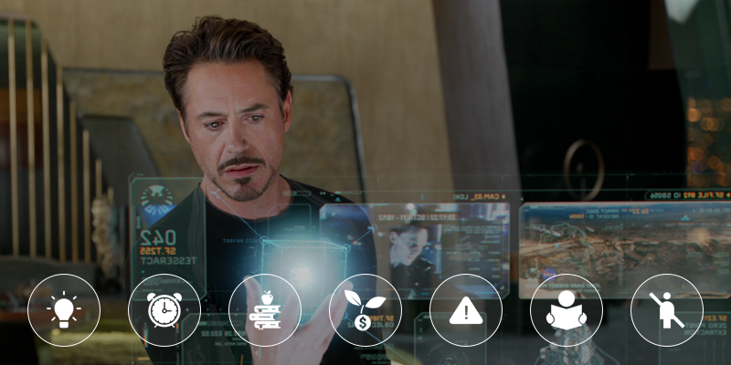
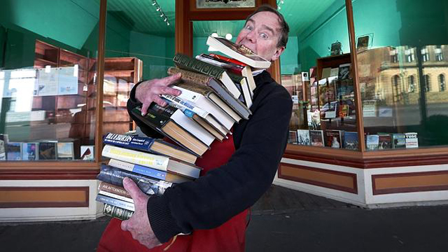

7 вещей о книгах и жизни, которые я узнал, прочитав 100 книг за год
Прочитав сотую книгу, я понял, что чтение — не только возможность получить новые навыки. Чтение может изменить жизнь. И я не говорю о списках книг, которые меняют жизни людей. Я говорю о деятельности, которая незаметно проникает во все сферы нашей жизни и понемногу преображает их. Тот год сильно повлиял на мое развитие. Я решил разобраться почему и выделил 7 основных моментов, которыми и поделюсь с вами.
Ответы на часто задаваемые вопросы
Моя подборка толковых книг вызвала множество вопросов в комментариях и соц. сетях. Чтобы подобное не повторялось, я решил сразу ответить на на часто задаваемые вопросы.
Как читать быстро и понимать?
Какие книги я читал?
90% — это нон-фикшн. На художественную литературу уходило 10-20 минут перед сном. Я никогда не читал саммари книг.
Где я брал книги?
Я покупаю книги. Сейчас купить гораздо проще, чем скачать нелегально. Книги на litres.ru стоят, как 1-2 чашки кофе, а пользу приносят несравненно большую. Под конец года я стал сотрудничать с издательствами деловой литературы «Альпина Паблишер» и «Манн, Иванов и Фербер» и начал получать книги бесплатно.
Зачем я читал столько? Вопрос мотивации
Я не знаю зачем. Я люблю книги, и эта идея меня зажгла. Мотивационную поддержку мне обеспечило интернет-сообщество. Тогда я не знал о сервисе достижения целей SmartProgress и делился успехами на странице соц. сети. Публичное обещание увеличивает шансы на успех в разы. Люди интересуются, поддерживают, а иногда, даже, присоединяются к тебе.
Как я подбирал книги?
Я сверяю рейтинги Озона, Амазона и слушаю рекомендации интересных и успешных людей. Иногда пишу авторам на почту и 9 из 10 отвечают.
Где и когда я читал?
Любая пауза — повод почитать, поэтому я читаю несколько книг параллельно. Бумага, телефон, планшет — все задействовано.
Итак, 7 вещей о книгах и жизни, которые я узнал, прочитав 100 книг за год
1. Идеи приходят во время чтения
Я очень не люблю терять идеи, поэтому всегда держу пачку стикеров на столе. В какой-то момент мне пришла идея провести небольшой эксперимент и понять, какая деятельность способствуют появлению идей. Тогда, помимо идеи, я начал записывать контекст её появления. Несколько месяцев я складывал стикеры в целлофановый пакет и предвкушал результат. В итоге я получил следующую статистику:
Чтение — 43 идеи.
Отход ко сну — 23 идеи.
Душ — 7 идей.
Итоги:
- Не складируйте идеи. Просматривайте записи раз в неделю и пытайтесь реализовать хотя бы часть из них. Остальное выбрасывайте.
- Не пытайтесь запомнить. Всегда держите рядом блокнот или телефон.
2. Всем Большинству на тебя наплевать
Принятый вызов стал отличной проверкой окружения. Логично, что у меня стало меньше времени на бестолковые разговоры в сети. Общение ограничилось несколькими людьми, что помогло мне отобрать настоящих друзей и отсеять простые контакты.
Итоги:
- Окружение сильно влияет на нас. Общаясь с интересными, успешными людьми мы становимся лучше. Вокруг появляется несколько реальных историй успеха, которые мотивируют. К тому же, всегда есть у кого спросить совет.
- Найти интересных людей несложно. Поищите блогеров, авторов книг, предпринимателей. Напишите им, пообщайтесь онлайн, а после назначьте встречу. Лично мне удалось пообщаться с 5-ю авторами бестселлеров, в том числе и зарубежных.
3. У нас больше времени, чем мы думаем
Я уверен, что вы встречали студентов, которые сетуют на нехватку времени. Это смешно. Мы знаем десятки примеров успешных людей, которые развивают бизнес, активно занимаются спортом, имеют семью и все прекрасно успевают.
Непросто отказаться от информационной иглы, к которой нас приучают с детства. На это требуется время. Начав читать много, я ограничил чтение СМИ и обнаружил, что не зная текущую политическую или экономическую ситуацию я не превратился в аборигена. Внутреннее состояние улучшилось, и мозг получил больше времени на размышления.
Итоги:
- Проведите эксперимент. Отключитесь от развлекательных сайтов на неделю. Если невозможно, то не заходите в интернет до 16:00. Я почти уверен, что ваша жизнь преобразится.
- Определите, сколько времени вы будете уделять чтению каждый день.
4. Книги меняют
Говорят, что книги не меняют, а лишь обстоятельства способны повлиять на жизнь человека. Не соглашусь. Книга «Номер 1» пробудила во мне интерес к саморазвитию, Тим Феррис показал, что можно жить и работать по-другому.Чтение учит грамотно излагать мысли, что очень важно, ведь общаемся мы каждый день. А от некоторых диалогов (или писем) может зависеть успех бизнеса или карьеры на определенном этапе.
5. Деньги, потраченные на книги окупаются
Считается, что из десяти стартапов окупают себя 3, а один окупает все 10. С книгами ситуация чуть лучше. Изменить жизнь может одна из ста, но положительно влияют больше половины (при правильном подборе литературе). В студенческие годы я тратил по 3-5 тысяч в месяц на книги. Сосед крутил у виска пальцем, а я верил, что поступаю правильно. Чуть позже я приобрел интернет-курс по дизайну, который изменил мой подход к дизайну. Этот курс окупил себя в разы уже на следующий месяц.
Итоги:
- Сегодня жалко потратить несколько тысяч на то, что может не пригодиться завтра. Но, лишь попробовав, у нас появляется возможность стать лучше. Да, одна книга может быть бестолковой, но прочитав 10, вы точно не пожалеете.
- По окончанию эксперимента у меня накопилось десятки бумажных книг. Их можно продать, подарить или разыграть.
6. Читать нужно осторожно
Книги мотивируют и это хорошо. Но бывает и наоборот. Вы можете искренне поверить в то, что вам необходимо написать книгу или основать компанию, и лишь потеряв несколько лет осознаете, что все это было вам не нужно.
Итоги:
- Анализируйте прочитанное, спорьте с автором. Полезно делать это в рамках блога. Сейчас не так много людей имеют свое мнение.
- Проверяйте любые цели и мечты. Кем они навеяны? Модой, обществом или идут изнутри?
7. Мы читаем книги неправильно
Я думал, что прочитав 100 книг, получу гору теоретической информации, которая пригодится для реализации идей. Отчасти это верно, но чтение с таким подходом не эффективно. Со школы нас учили читать слово за словом. Так читают художественную литературу. Нон-фикшн требует другого подхода. Открывая очередную книгу, вы должны понимать, какую информацию вы ищите. Не сделав этого, вы будете брести будто в тумане в попытке найти что-то полезное.
Итоги:
- Перед чтением новой книги запишите несколько вопросов, ответы на которые вы хотите найти.
- Старайтесь понять главную мысль автора. Даже среди бестселлеров есть книги одной мысли.
Заключение
В середине года я остановился. Чтение превратилось в пытку, а каждый абзац в банальность. Я не читал больше месяца. Сейчас интерес к книгам возник с новой силой. Понимая, что полученные навыки по маркетингу, продажам, дизайну или программированию могут помочь тебе уже завтра, книги превращаются в золотое дно. Главное — не становиться пассивной базой знаний, а уже на следующий день применять полученные навыки в деле.